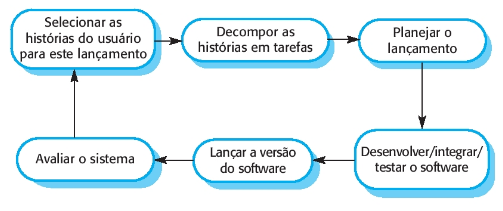
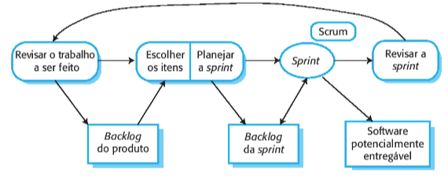
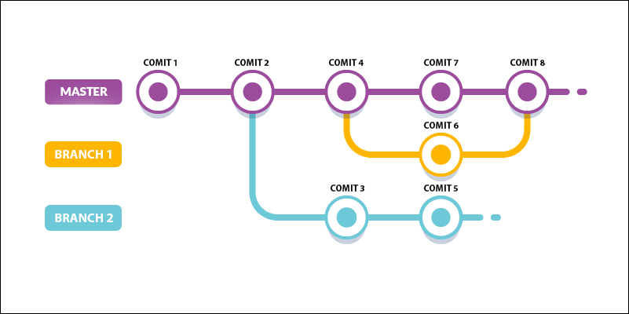

Metodologia
1. Métodos ágeis
Os métodos ágeis são projetados para produzir software útil rapidamente. Eles são baseados no desenvolvimento incremental. Os incrementos são pequenos e uma nova versão do sistema geralmente é criada e fornecida aos clientes a cada duas ou três semanas, para que seja possível obter um feedback rapidamente sobre as mudanças nos requisitos. Além disso, esses métodos minimizam a documentação usando comunicação informal no lugar de reuniões formais com documentos escritos.
Os métodos ágeis consideram o design e a implementação como atividades centrais no processo de software. Eles incorporam outras tarefas a essas atividades, como a elicitação dos requisitos e os testes. Apesar de existirem diversos processos ágeis, todos compartilham um conjunto de princípios com base no manifesto ágil e foi descrito por Sommerville, Ian (2019, p. 61):
| Princípio | Descrição |
|---|---|
| Envolvimento do cliente | Os clientes devem ser envolvidos em todo o processo de desenvolvimento. Seu papel é fornecer e priorizar novos requisitos de sistema e avaliar as iterações do sistema. |
| Acolher as mudanças | Tenha em mente que os requisitos do sistema mudam e, portanto, deve-se projetar o sistema para acomodar essas mudanças. |
| Entrega incremental | O software é desenvolvido em incrementos e o cliente especifica os requisitos incluídos em cada um deles. |
| Manter a simplicidade | Deve-se ter como foco a simplicidade, tanto do software que está sendo desenvolvido quanto do processo de desenvolvimento. Sempre que possível, trabalhe ativamente para eliminar a complexidade do sistema. |
| Pessoas, não processos | As habilidades do time de desenvolvimento devem ser reconhecidas e aproveitadas da melhor maneira possível. Seus membros devem ter liberdade para desenvolver seu modo próprio de trabalhar sem se prender a processos determinados. |
2. Extreme Programming (XP)
Extreme Programming, mais conhecido como XP, é uma metodologia ágil de desenvolvimento de software que tem como objetivo produzir software de alta qualidade e, também, melhor qualidade de vida para a equipe de desenvolvimento. A metodologia XP capacita seus desenvolvedores a lidarem com confiança às mudanças nos requisitos do cliente, mesmo no final do ciclo de vida. Além disso, Don Wells (1999) diz que a XP é configurada para pequenos grupos de programadores. A equipe XP inclui não apenas os desenvolvedores, mas também os gerentes e clientes, todos trabalhando juntos.
Os requisitos se baseiam em histórias simples dos clientes (histórias de usuário) e são utilizados como base para decidir qual funcionalidade deve ser incluída em um determinado incremento. Os programadores trabalham em pares (pair programming) e desenvolvem testes para cada tarefa antes de escreverem o código. Todos os testes devem ser executados com sucesso quando o novo código é integrado ao sistema, já que há um curto intervalo de tempo entre as releases do sistema.

3. Scrum
Scrum é um método ágil, iterativo e incremental para gerenciamento de projetos, que não necessariamente precisam ser projetos de desenvolvimento de software. Dentre os métodos ágeis, Scrum é o mais conhecido e usado. Por meio da organização das tarefas e prioridades que o Scrum estabelece, passa a ser possível garantir o cumprimento de prazos e um maior foco nas diretrizes estabelecidas pelo planejamento. Sabendo quais são as atividades que possuem mais importância, as equipes consegue organizar melhor o fluxo de uma para a outra.
O Scrum utiliza o product backlog que é um registro que contém as áreas do produto que devem ser desenvolvidas. De acordo com a prioridade de cada produto, cria-se uma lista de tarefas de liberação a partir da lista de tarefas de produtos, que é o ponto de conexão para que as necessidades da lista de tarefas de produtos sejam processadas. Publicar uma tarefa é um ponto na criação de uma tarefa do sprint e representa o período de tempo para a conclusão de uma tarefa (chamada de história de usuário).

4. Kanban
O método Kanban é projetado para causar mudanças evolutivas em seu gerenciamento de maneira não disruptiva. Implementando pequenas mudanças em vez de grandes mudanças, o risco de resistência de sua equipe é reduzido. A abordagem incremental a esta abordagem tem pouca ou nenhuma resistência de sua equipe ou partes interessadas. A primeira etapa é criar um Kanban para visualizar o fluxo de trabalho. O Quadro Kanban é dividido em colunas, da seguinte forma:
A primeira coluna é o backlog do produto. Como em Scrum, usuários escrevem as histórias, que vão para o Backlog.
As demais colunas são os passos que devem ser seguidos para transformar uma história do usuário em uma funcionalidade executável. A ideia, portanto, é que as histórias sejam processadas passo a passo, da esquerda para a direita, como em uma linha de montagem. Além disso, cada coluna é dividida em duas sub-colunas: em execução e concluídas. As tarefas concluídas em um passo estão aguardando serem puxadas, por um membro do time, para o próximo passo. Por isso, Kanban é chamado de um sistema pull.

5. Política de Branches e Commits
Através da imagem abaixo iremos implementar o git flow do projeto, de maneira que para uma mudança impactar a branch main (branch principal) os seguintes passos deverão ser seguidos:

- Deve-se criar uma branch nova a partir da main
- Ao acabar a implementação na branch nova, deve ser criado um PR para ser avaliado, preenchendo os campos necessários do modelo pré-determinado
- Caso o PR seja aprovado, a branch nova será apagada e o seu conteúdo estará na main
Toda nova branch deverá seguir um padrão de nomenclatura, sendo seguido o padrão de Conventional Commits tanto para o nome da branch como para os commits feitos:

Exemplo:
feat/new-feature --branch
feat: create a new feature --commit
6. Pair Programming
O Pair Programming, ou traduzida literalmente como Programação em Pares, é uma técnica ágil de desenvolvimento de software. O objetivo é melhorar a qualidade do software desenvolvido sem alterar seu prazo de entrega. O trabalho é feito por duas pessoas em um computador. Um é responsável por controlar o processo de criação e escrever o código. Ao mesmo tempo, o outro faz mais análises, olhando cada linha de código para identificar erros.
Para tornar o processo mais dinâmico e eficaz, é comum que os parceiros troquem papéis ao longo do processo de desenvolvimento do trabalho. Isso ajuda a tornar o processo mais eficiente e menos sujeito a erros, pois o observador sempre estará ciente da falha e o controlador poderá se concentrar na digitação do código.
7. Referência bibliográfica
Sommerville, Ian. Engenharia de software. 10. ed. São Paulo: Pearson Addison Wesley, 2019.
Foggetti, Cristiano. Gestão ágil de projetos. São Paulo: Education do Brasil, 2014.
Wells, Don. Extreme Programming: A gentle introduction. Extreme Programming, 1999. Disponível em: http://www.extremeprogramming.org/
Metodologias ágeis: o que é Pair Programming?. Programadores Brasil, 2020. Disponível em: https://programadoresbrasil.com.br/2020/04/o-que-e-pair-programming/
Metodologia Ágil: O que é Kanban. Programadores Brasil, 2020. Disponível em: https://programadoresbrasil.com.br/2020/02/metodologia-agil-o-que-e-kanban/
Extreme Programming. Agile Alliance. Disponível em: https://www.agilealliance.org/glossary/xp/#.YRnn2znQQyc
Metodologia Ágil: O que é Scrum. Programadores Brasil, 2020. Disponível em: https://programadoresbrasil.com.br/2020/02/o-que-e-scrum-metodologia-agil/
8. Histórico de versão
| Versão | Data | Descrição | Autor |
|---|---|---|---|
| 0.1 | 06/08/2021 | Criação do questionário | Juliana |
| 0.2 | 16/08/2021 | Adicionando XP e Pair Programming | Juliana |
| 0.3 | 16/08/2021 | Adicionando Scrum e Kanban | Juliana |
| 0.4 | 20/08/2021 | Correções na apresentação da documentação | Paulo Victor |
| 0.4 | 24/08/2021 | Criação de política de branche e commits | Matheus Afonso |
| 0.5 | 24/08/2021 | Correções de formatação | Mateus Gomes |